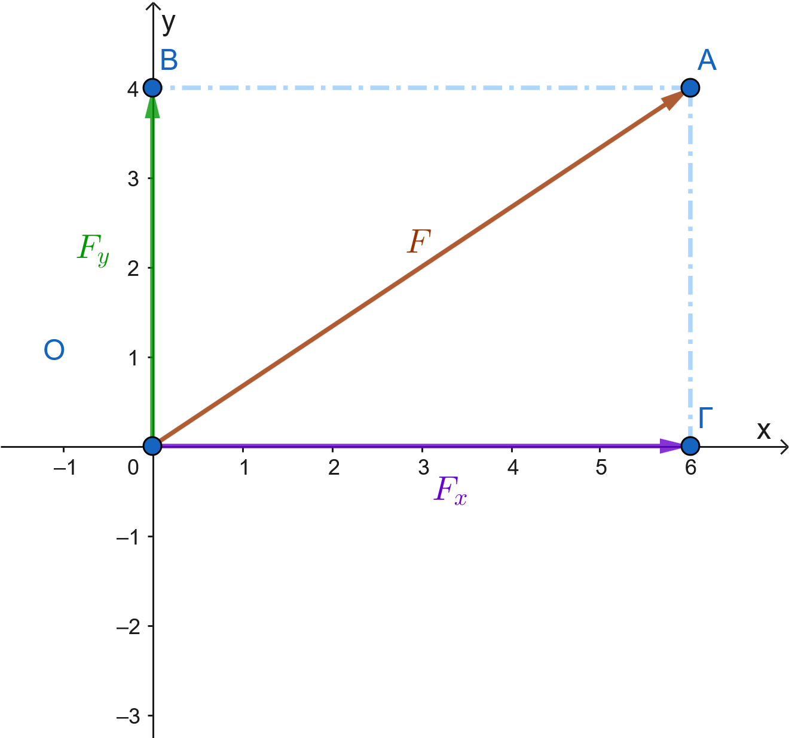
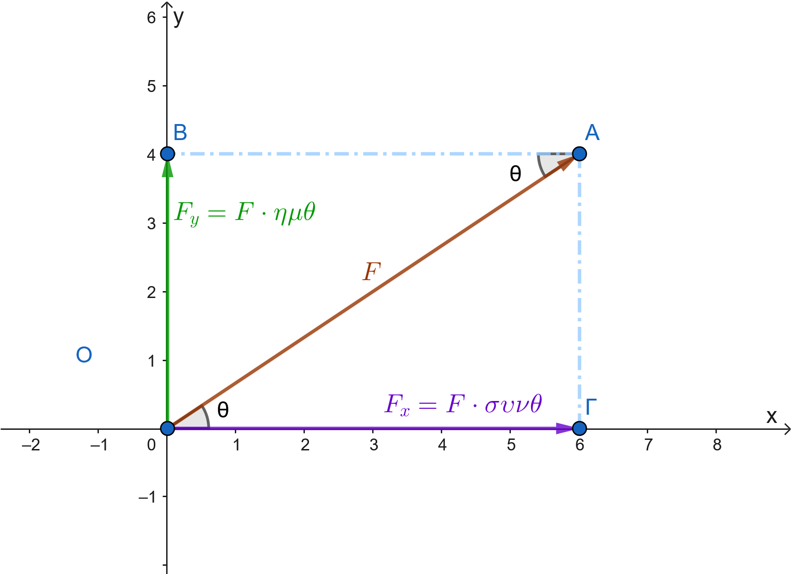
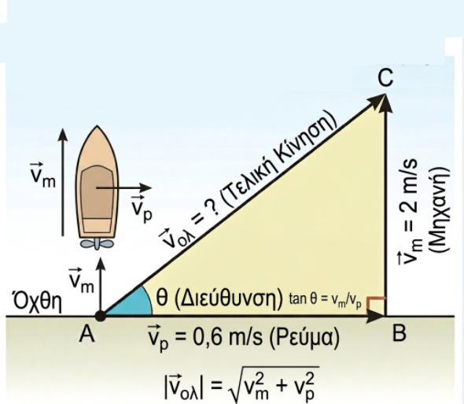
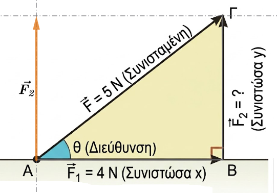
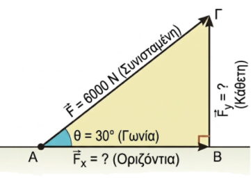

1 Ανάλυση διανύσματος σε δύο κάθετες συνιστώσες
1.1 Ανάλυση διανύσματος σε δύο κάθετες συνιστώσες
Η ανάλυση ενός διανύσματος (ή μιας δύναμης) σε δύο κάθετες συνιστώσες είναι η διαδικασία κατά την οποία αντικαθιστούμε ένα διάνυσμα με δύο άλλα, κάθετα μεταξύ τους, τα οποία επιφέρουν το ίδιο αποτέλεσμα. Η διαδικασία αυτή είναι εξαιρετικά χρήσιμη στη Φυσική και τη Μηχανική, καθώς απλοποιεί την επίλυση προβλημάτων επιτρέποντας τη μελέτη των δυνάμεων σε συγκεκριμένες διευθύνσεις.
1.1.1 Γραφική Μέθοδος Ανάλυσης
Για να αναλύσουμε γραφικά ένα διάνυσμα \(\vec{F}\) σε δύο κάθετες συνιστώσες, ακολουθούμε τα εξής βήματα:
Σχεδιασμός Αξόνων: Στην αρχή του διανύσματος σχεδιάζουμε δύο κάθετες ευθείες (άξονες \(x'x\) και \(y'y\)).

Προβολές: Από το πέρας (το τέλος) του διανύσματος φέρνουμε ευθείες παράλληλες προς τους άξονες.
Σχηματισμός Συνιστωσών: Τα σημεία τομής αυτών των παραλλήλων με τους άξονες ορίζουν το τέλος των δύο συνιστωσών, \(\vec{F_x}\) και \(\vec{F_y}\). Το σχήμα που προκύπτει είναι ένα ορθογώνιο παραλληλόγραμμο, όπου το αρχικό διάνυσμα αποτελεί τη διαγώνιό του.
1.2 Μέτρα Συνιστωσών -Μαθηματικός Υπολογισμός (Τριγωνομετρία)
Αν γνωρίζουμε το μέτρο της δύναμης \(F\) και τη γωνία \(\theta\) που σχηματίζει με τον οριζόντιο άξονα, μπορούμε να υπολογίσουμε τα μέτρα των συνιστωσών χρησιμοποιώντας την τριγωνομετρία σε ένα ορθογώνιο τρίγωνο:

Οριζόντια συνιστώσα: \(F_x = F \cdot \sigma \upsilon \nu \theta\).
Κατακόρυφη συνιστώσα: \(F_y = F \cdot \eta \mu \theta\).
Ένας πρακτικός κανόνας για να θυμάστε ποιον τριγωνομετρικό αριθμό θα χρησιμοποιήσετε είναι ότι η συνιστώσα που «ακουμπάει» στη γωνία \(\theta\) υπολογίζεται με το συνημίτονο, ενώ η συνιστώσα που βρίσκεται απέναντι από τη γωνία υπολογίζεται με το ημίτονο.
1.3 Επιλογή Αξόνων και Εφαρμογές
Οι διευθύνσεις των αξόνων δεν είναι απαραίτητα μόνο η κατακόρυφη και η οριζόντια, αλλά επιλέγονται με βάση την ευκολία του προβλήματος:
Κεκλιμένο επίπεδο: Όταν ένα σώμα (π.χ. ένας σκιέρ ή ένα φορτηγό) βρίσκεται σε κατηφόρα, είναι πιο αποτελεσματικό να αναλύουμε το βάρος του σε έναν άξονα παράλληλο προς το έδαφος (που προκαλεί την κίνηση) και έναν άξονα κάθετο σε αυτό.
Στατική κτιρίων: Οι μηχανικοί αναλύουν τις πλάγιες δυνάμεις ενός σεισμού σε οριζόντιες και κάθετες συνιστώσες για να υπολογίσουν την αντοχή σε δοκάρια και κολόνες αντίστοιχα.
1.4 Συνήθη Σφάλματα
Σύμφωνα με μελέτες, οι μαθητές συχνά δυσκολεύονται στην ανάλυση διανυσμάτων, κάνοντας λάθη όπως:
Σύγχυση ημιτόνου και συνημιτόνου, ειδικά όταν η γωνία δίνεται σε σχέση με τον κατακόρυφο άξονα και όχι τον οριζόντιο.
Λάθη στα πρόσημα, κυρίως όταν το διάνυσμα δίνεται από την «αιχμή» (tip) και όχι από την «ουρά» (tail).
Λανθασμένος σχηματισμός τριγώνου, όπου το αρχικό διάνυσμα δεν τοποθετείται ως υποτείνουσα, οδηγώντας στη χρήση εφαπτομένης αντί για ημίτονο/συνημίτονο.
Η διαδικασία της σημείωσης της γωνίας πάνω στο σχήμα από τον ίδιο τον μαθητή έχει αποδειχθεί ότι βελτιώνει σημαντικά την ακρίβεια των υπολογισμών.
1.5 Ασκήσεις
Συνισταμένη Ταχυτήτων: Μια βάρκα διασχίζει κάθετα ένα ποτάμι με ταχύτητα μηχανής 2 m/s, αλλά παρασύρεται από το ρεύμα που έχει ταχύτητα 0,6 m/s. Σχεδιάστε τις δύο ταχύτητες και τη διεύθυνση της τελικής κίνησης.

Λύση
Για να λύσουμε την άσκηση με τη βάρκα, ακολουθούμε τη λογική της σύνθεσης των ταχυτήτων:
Κάντε τα παρακάτω με χαρτί και μολύβι.
- Σχεδίαση των διανυσμάτων: - Σχεδιάζουμε ένα διάνυσμα \(\vec{v_m}\) (ταχύτητα μηχανής) κάθετο στις όχθες του ποταμού με μέτρο 2 m/s. - Από την ίδια αρχή, σχεδιάζουμε ένα διάνυσμα \(\vec{v_p}\) (ταχύτητα ρεύματος) παράλληλο στις όχθες με μέτρο 0,6 m/s.
- Εύρεση της τελικής κατεύθυνσης: - Επειδή οι δύο ταχύτητες ασκούνται ταυτόχρονα, η βάρκα θα κινηθεί κατά τη διεύθυνση της συνισταμένης τους. - Χρησιμοποιούμε τη μέθοδο του παραλληλογράμμου: σχηματίζουμε ένα ορθογώνιο με πλευρές τα δύο διανύσματα. Η τελική ταχύτητα \(\vec{v_{ολ}}\) είναι η διαγώνιος που ξεκινά από την κοινή τους αρχή.
Η βάρκα τελικά θα ακολουθήσει μια πλάγια διαδρομή, παρασυρόμενη από το ρεύμα.
Υπολογίστε το ακριβές μέτρο της τελικής ταχύτητας χρησιμοποιώντας το Πυθαγόρειο θεώρημα
Ανάλυση Δύναμης: Μια δύναμη \(\vec{F}\) με μέτρο 5 Ν αναλύεται σε δύο κάθετες συνιστώσες \(\vec{F_1}\) και \(\vec{F_2}\). Αν η μία συνιστώσα έχει μέτρο 4 Ν, υπολογίστε το μέτρο της άλλης.

Υπολογισμός με Τριγωνομετρία: Μια δύναμη \(\vec{F}\) έχει μέτρο 6000 Ν και σχηματίζει γωνία \(30^\circ\) με ένα οριζόντιο δοκάρι. Υπολογίστε τα μέτρα της οριζόντιας και της κάθετης συνιστώσας της, χρησιμοποιώντας το ημίτονο και το συνημίτονο της γωνίας.

Λύση
Θα χρησιμοποιήσουμε το ημίτονο και το συνημίτονο για να αναλύσουμε τη δύναμη στις δύο κάθετες συνιστώσες της, την οριζόντια και την κατακόρυφη.
Κάντε ένα σχέδιο στο χαρτί σας
Σύμφωνα με τη θεωρία, αν \(\theta\) είναι η γωνία που σχηματίζει η δύναμη με τον οριζόντιο άξονα, τότε:
Οριζόντια συνιστώσα (\(F_{οριζ}\)): Υπολογίζεται από τον τύπο \(F_{οριζ} = |\vec{F}| \cdot συν\theta\). Για τη συγκεκριμένη άσκηση: \(F_{οριζ} = 6000 \cdot συν30^\circ = 6000 \cdot \frac{\sqrt{3}}{2} = 3000\sqrt{3} \approx 5196\) N.
Κάθετη συνιστώσα (\(F_{καθ}\)): Υπολογίζεται από τον τύπο \(F_{καθ} = |\vec{F}| \cdot ημ\theta\). Για τη συγκεκριμένη άσκηση: \(F_{καθ} = 6000 \cdot ημ30^\circ = 6000 \cdot \frac{1}{2} = 3000\) N.
Με αυτόν τον τρόπο βρίσκουμε πώς η πλάγια δύναμη των 6000 N “μοιράζεται” στους δύο άξονες.
Δίνεται ένα διάνυσμα \(\vec{a}\) με μέτρο \(|\vec{a}|=8\) cm και κατεύθυνση προς τα δεξιά. Σχεδιάστε και περιγράψτε το αντίθετο διάνυσμά του \(-\vec{a}\). Ποιο είναι το μέτρο του;
Αν δύο διανύσματα \(\vec{x}\) και \(\vec{y}\) είναι ίσα, τι μπορείτε να πείτε για το μέτρο, τη διεύθυνση και τη φορά τους; Αν \(|\vec{x}|=10\), πόσο είναι το \(|\vec{y}|\);
Ένα σώμα μετατοπίζεται από το σημείο Α στο σημείο Β και στη συνέχεια επιστρέφει στο σημείο Α. Ποιο είναι το συνολικό διάνυσμα μετατόπισης και ποιο το μέτρο του;
(Συγγραμμικά - Ομόρροπα): Δύο δυνάμεις \(\vec{F_1}\) και \(\vec{F_2}\) έχουν την ίδια διεύθυνση και φορά, με μέτρα 12 N και 5 N αντίστοιχα. Υπολογίστε το μέτρο της συνισταμένης δύναμης \(\vec{F_{ολ}} = \vec{F_1} + \vec{F_2}\).
(Συγγραμμικά - Αντίρροπα): Ένας άνθρωπος σπρώχνει ένα κιβώτιο προς τα δεξιά με δύναμη \(F_1 = 20\) N, ενώ ένας δεύτερος το σπρώχνει προς τα αριστερά με δύναμη \(F_2 = 15\) N. Βρείτε το μέτρο και τη φορά της συνολικής δύναμης.
(Κανόνας Τριγώνου): Σχεδιάστε δύο τυχαία διανύσματα \(\vec{a}\) και \(\vec{b}\) που δεν είναι παράλληλα. Σχεδιάστε το άθροισμά τους \(\vec{s} = \vec{a} + \vec{b}\) χρησιμοποιώντας τον κανόνα του τριγώνου.
(Διαφορά): Δίνονται δύο διανύσματα \(\vec{a}\) (προς τα πάνω) και \(\vec{b}\) (προς τα δεξιά). Σχεδιάστε το διάνυσμα της διαφοράς \(\vec{d} = \vec{a} - \vec{b}\).
(Κάθετα Διανύσματα): Ένα πλοίο κινείται 3 km Βόρεια (\(\vec{d_1}\)) και μετά 4 km Ανατολικά (\(\vec{d_2}\)).
α) Σχεδιάστε τα διανύσματα.
β) Υπολογίστε το μέτρο της συνολικής μετατόπισης (Hint: Πυθαγόρειο Θεώρημα).
(Πολλαπλασιασμός με αριθμό): Αν το διάνυσμα \(\vec{v}\) έχει μέτρο 4 m/s και φορά προς το Βορρά, περιγράψτε το διάνυσμα \(\vec{u} = 3\vec{v}\) και το διάνυσμα \(\vec{w} = -2\vec{v}\).
(Μηδενικό Διάνυσμα): Αν για τρία διανύσματα ισχύει η σχέση \(\vec{a} + \vec{b} + \vec{c} = \vec{0}\), τι σχήμα θα σχηματίσουν αν τα τοποθετήσουμε το ένα μετά το άλλο (διαδοχικά);
Ένα σημείο \(K\) βρίσκεται πάνω σε ένα χαρτί. Το μετατοπίζουμε κατά το διάνυσμα \(\vec{u}\) και πάει στη θέση \(Λ\). Μετά, το σημείο \(Λ\) το μετατοπίζουμε ξανά κατά το ίδιο διάνυσμα \(\vec{u}\) και πάει στη θέση \(M\). Πόσες φορές το διάνυσμα \(\vec{u}\) είναι το συνολικό διάνυσμα \(\vec{KM}\);
Σε αυτά τα προβλήματα, δοκιμάστε πρώτα να κάνετε ένα πρόχειρο σχήμα (τα διανύσματα) και ακολουθήστε τους κανόνες.
ΚΑΛΗ ΜΕΛΕΤΗ !